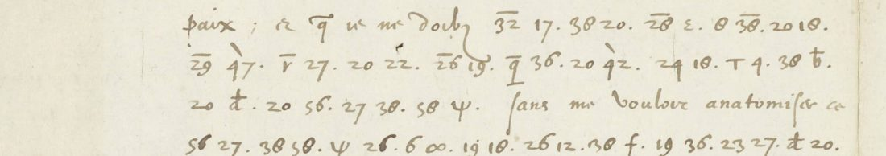
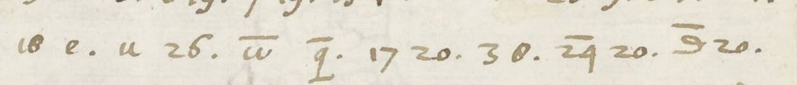
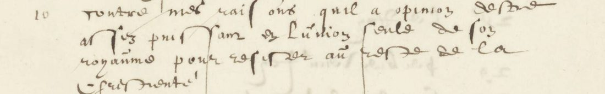
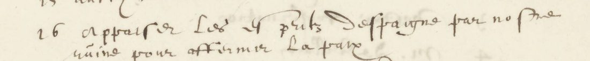

At a glanceKey from adjacent plaintext · partial overall · 25 May: 59 of 61 tokens attested
- The letter
- François van Aerssen, Dutch agent in Paris, to Johan van Oldenbarnevelt, 25 May 1601. A short cipher passage within a French letter; a second passage is dated 2 June.
- Where
- Nationaal Archief, 3.01.14 (Oldenbarnevelt), inventory 2019, scans 57 and 66. No contemporary decipherment of either passage is reported.
- The cipher
- Numbers and graphic signs stand for letters, syllables and names. Bars and strokes distinguish values.
- How it was deciphered
- The key was rebuilt from the 11 and 28 May interlinear glosses and the separate contemporary list A for 30 April. Of 61 May tokens, 59 (96.7%) have at least one attestation and 58 (95.1%) at least two.
- What it says
- The English agent reports renewed peace negotiations; the passage mentions the Queen of England and the late {45′}. The surrounding clear text names Neville and the Tower.
- Still open
- 47′ is unidentified; 45′ is conjecturally Essex, grade I. The 2 June sibling has only 9/11 attested tokens (81.8%); the combined 68/72 (94.4%) remains partial.
- Credit
- Decipherment by Feyseel Nur (with Claude and Codex). Both Codex reviews are retained. Transcriptions made by LLMs from Nationaal Archief scans (CC0), checked against the glosses and list A used to reconstruct the key.
01 The letters and their witnesses
The 25 May letter has two cipher runs, totalling 61 tokens, at the top of the left page of scan 57. This edition gives those runs and their clear context, not the entire letter. The key comes from the interlinear decipherments of 11 May (scans 50–51) and 28 May (scans 62–63). The cipher of 30 April (scans 42–43) has a separate contemporary decipherment, list A, on scan 46.

The prior-art search covered De Leeuw (2000), DECODE, Tomokiyo, editions and the Nationaal Archief digitised series. Haak’s Johan van Oldenbarnevelt. Bescheiden, RGP GS 80 (1934), prints Aerssen’s letters of 1598–1601, but none between 19 April and 23 June 1601. Neither target letter was found in Van Deventer’s volume II (1862); Veenendaal omitted Aerssen’s correspondence from the later volumes. Nouaillac’s letter of 11 May 1601, printed with passages left in cipher, is to Valcke, a different recipient. “No prior reading found” is limited to the sources searched; restricted works and the old Legatie-archief key locations remain unchecked. The DECODE search was inconclusive even on controls; no DECODE identifier is established.
02 The 25 May passage
Square brackets mark cipher spans; braces retain name codes. Spacing, accents and punctuation are editorial. The two runs have intervening clear words.
… l’Agent d’Angleterre m’a asseuré qu’on renoue la negotiation de la paix; et que je ne doibz [douter de l’effort de {47′} pour y disposer la Royne d’Angleterre et l’obtenir par toutevoye]. Sans me vouloir anatomiser ce, [toutevoye il est interessé au parti de feu {45′}], et par la delation de M. l’Ambassadeur de Nevill, que depuis a esté mis dans la tour.
English. The English agent assured me that the peace negotiation is being resumed, and that I must not doubt the effort of {47′} to bring the Queen of England to it and obtain it by all means. Without wishing to dissect this: nevertheless he is implicated in the party of the late {45′}, and by the denunciation of the ambassador Neville, who has since been put in the Tower.
The pronoun’s referent and the attachment of the denunciation clause remain uncertain. Par toute voye is a plausible spacing. The lexical skeleton is stronger than any interpretation of the syntax. Both name codes remain visible in the reading: 47′ is unidentified; 45′ = Essex is an inference, grade I, not an attested key value.
Historical context, not cipher proof. The letter falls among Anglo-Spanish peace feelers after Boulogne (1600). Essex was executed on 25 February 1601; Sir Henry Neville, English ambassador in Paris, was implicated and sent to the Tower. Neville’s secretary Ralph Winwood was then the English agent in Paris. Identifying the unnamed agent with Winwood is contextual, not proven by this passage; it does not identify 47′ or establish the code for Essex.
03 Recovering the key and separating two q signs
The repository’s matching outcome is key recovered based on adjacent plaintext: the key was reconstructed from plaintext next to sibling ciphertext and a separate decipherment in the same file. There is no existing 25 May decipherment to transcribe. The system combines letters, syllables and word codes; some alternative values may reflect unresolved glyph distinctions.

qF in the cipher for pour affermir, corresponding to list A16. Image: Nationaal Archief, 3.01.14 (Oldenbarnevelt), inv. 2019, scan 43 (CC0).- qF = po, a q barred at its foot, occurs in 25 May and in 30 April A10/A16. Both list-A passages attest po in pour.
- qT = qui, the through-stroked q of 11 May M11u, is a different sign. The original label q_ conflated the two; the transcriptions separate them. q^ remains distinct.
- The Queen code on 25 May is corrected to plain 42, attested on 11 May, 28 May and in list A12.
- theta = f has one direct attestation; the B-like sign of 28 May is not assumed identical. This glyph uncertainty remains grade M.
The images were checked on the scans. The distinction between qF (a bar at the foot) and qT (a stroke through the descender) was checked visually on scans 43, 57 and the 11 May scan. Repository grades are H for a primary key, C for known plaintext, M for uncertainty and I for inference. The source’s H/C/M frequency bands are retained separately as legacy_support; they must not be mistaken for these evidence grades. The 25 May count has C 58, M 1, I 1 and one unassigned token. No primary-key H grade is claimed.
04 What the checks establish


The corrected token recount gives 59/61 = 96.7% attested at least once, and 58/61 = 95.1% at least twice. Theta is the single-attestation token. Including contextual Essex would give 60/61, but that is not the supported headline. These percentages measure attestation coverage, not independently proven accuracy.
| Check | Result | Limit |
|---|---|---|
| 30 April against list A | 281/330 = 85.2%; old frequency-H band 252/274 = 92.0% | Alternatives selected against the answer; fixed top values give 270/330 = 81.8%. |
| French word coverage | Real 0.838 | Dictionary segmentation permits free gaps and rewards fragments. |
| 2,000 token-order shuffles | Mean 0.395; maximum 0.667 | Structure control, not proof of grammatical correctness. |
| 2,000 key permutations | Mean 0.401; maximum 0.726 | Decoded length varies under permutation. |
The 30 April transcription preceded comparison with list A, but frozen versions are not established. The aligner skips reference letters and absorbs mismatches; the 330-token count includes an ellipsis and A19 is incomplete (281/329 excluding the ellipsis). List A now also supplies attestations, so it is no longer a clean holdout.
The initial Codex review found the French skeleton convincing but the attestation claim overstated under the old labels. The later recount accepts qF/qT and plain 42 and obtains 59/61. Both reviews are preserved verbatim; neither is independent manuscript verification. The controls were run with scripts/measure.py and scripts/control2.py in the target folder. The lexicon’s upstream provenance and licence remain unresolved.
05 The shorter sibling, 2 June
D’ailleurs [La Bauderie, ambassadeur du Roy a {88′}] m’a adverty qu’un Escossois nommé Stadt ou Stalwalter tient ordinaire correspondance avec les Archiducqs …
English. Moreover, La Bauderie, the King’s ambassador at {88′}, informed me that a Scot named Stadt or Stalwalter maintains regular correspondence with the Archdukes …
Nine of its eleven cipher tokens are attested (81.8%). The reading 20^ = ba is contextual—only 21^ = ba is glossed—and 88′ = Bruxelles is likewise grade I. Identification with La Boderie and Brussels is a hypothesis. k^ = ri is a singly attested minority alternative, grade M. This sibling is below the repository’s 95% bar, so the combined two-letter record is partial at 68/72 = 94.4%, even though 25 May alone meets the bar.
06 Remaining gaps and next evidence
- 25 May: 47′ unidentified and 45′ inferred as Essex only - blocker:
open-codes; neither name has an attested value. - 2 June: 20^ and 88′ - blocker:
open-codes; ba and Bruxelles are contextual guesses. - Recipient’s location for an atlas route - blocker:
no-key-material; only Paris is established by the source evidence. - French lexicon provenance and licence before redistribution - blocker:
no-key-material; upstream source documentation is missing. - Independent holdout validation - blocker:
no-key-material; a frozen key/transcription pair and an unused witness are needed. - Contemporary key sheet at the old Legatie-archief 611/612 locations - blocker:
no-key-material; current location unresolved.
The sibling transcriptions, list A and edition research were compared; every target segment was remeasured with the corrected key. No contemporary key sheet is available, and the old Legatie-archief 611/612 locations remain unresolved.
07 Sources and working files
- Nationaal Archief, Oldenbarnevelt 3.01.14, inventory 2019: scans 57 (25 May), 66 (2 June), 50–51 (11 May), 62–63 (28 May), 42–43 (30 April), 46 right (list A).
- Haak, Johan van Oldenbarnevelt. Bescheiden, RGP GS 80 (1934); Van Deventer, Gedenkstukken, volume II (1862); Veenendaal, RGP GS 108 and 121. Search results, corrections and access limits are preserved in
evidence/prior_art.txt. - Initial Codex review and corrected recount, copied verbatim.
Decipherment by Feyseel Nur (with Claude and Codex). Manuscript images: Nationaal Archief, 3.01.14 (Oldenbarnevelt), inv. 2019, scans 57, 46 and 43 (CC0). Repository folder: notes, key, transcriptions, reading, scripts and both reviews. 4 October 2026.